자동차정비산업기사 (2018-03-04 기출문제)
1과목: 일반기계공학
1. 기계구조용으로 많이 사용되는 KS 재료기호 SM35C의 설명으로 가장 적합한 것은?
- 최저 인장강도 35kgf/mm2인 기계 구조용 탄소강
- 최저 인장강도 35kgf/cm2인 기계 구조용 탄소강
- 탄소 함유량이 약 35% 정도인 기계 구조용 탄소강
- 탄소 함유량이 약 0.35% 정도인 기계 구조용 탄소강
(정답률: 63%)

2. 소성가공 방법이 아닌 것은?
- 롤링(rolling)
- 호닝(honing)
- 벌징(bulging)
- 드로잉(drawing)
(정답률: 56%)
3. 용접 이음부에 입상의 용재를 공급하고, 이용제 속에서 전극과 모재사이에 아크를 발생시켜 연속적으로 용접하는 방법은?
- TIG용접
- MIG용접
- 서브머지드 아크용접
- 이산화탄소 아크용접
(정답률: 74%)
4. 다음 중 비중이 2.7이며 내부식성, 강도, 연성이 좋은 합금원소는?
- 알루미늄
- 아연
- 니켈
- 납
(정답률: 82%)
5. 재료의 인장강도 σu= 7200MPa, 허용응력 σa= 900MPa일 때, 안전율(S)은?
- 4
- 6
- 8
- 10
(정답률: 82%)
6. 금긋기용 공구 중 가공물의 중심을 잡거나 가공물을 이동시켜 평행선을 그을 때 사용되는 공구는?
- 서피스 게이지
- 스크레이퍼
- 리머
- 펀치
(정답률: 64%)
7. 롤러 체인전동의 특징으로 틀린 것은?
- 유지 보수가 용이하다.
- 고속회전에 부적당하다.
- 진동과 소음이 발생하기 쉽다.
- 일정한 속도비로 전동이 불가능하다.
(정답률: 65%)
8. M5×0.8로 표기되는 나사에 관한 설명으로 옳지 않은 것은?
- 미터나사이다.
- 나사의 피치는 0.8mm이다.
- 암나사는 지름 5mm의 드릴로 가공한다.
- 나사를 180˚회전시키면 축방향으로 0.4mm 이동한다.
(정답률: 69%)
9. 정육면체의 외형 평면가공에 가장 적합한 공작기계는?
- 밀링 머신
- 태핑 머신
- 선반
- 슬로터
(정답률: 67%)
10. 성능이 같은 2대의 펌프를 직렬로 연결하는 경우 양정과 유량의 관계는?
- 유량 및 양정 모두 변함없다.
- 유량 및 양정 모두 2배로 된다.
- 유량은 변화가 없고 양정이 2배로 된다.
- 양정은 변화가 없고 유량이 2배로 된다.
(정답률: 65%)
11. 보의 중간지점(L/2)에서의 처짐값은? (단, 여기서 EI는 굽힘강성이다)
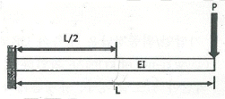
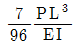
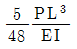
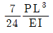
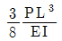
(정답률: 62%)
12. 동일한 크기의 전단응력이 작용하는 볼트 A와 볼트 B가 있다. A볼트에 작용하는 전단하중이 B볼트에 작용하는 전단하중의 4배라고 하면, A볼트의 지름은 B볼트의 몇 배인가?
- 0.5
- 2
- 4
- 8
(정답률: 60%)
13. 유체에너지를 기계적 에너지로 변화시키는 장치는?
- 여과기
- 액추에이터
- 컨트롤 밸브
- 압력제어 밸브
(정답률: 77%)
14. 10m/s의 속도로 흐르는 물의 속도수두는 약 몇 m인가?(단, 중력가속도는 9.8m/s2이다)
- 2.8
- 3.2
- 3.8
- 5.1
(정답률: 35%)
15. 동력 H(W)를 구하는 식으로 옳은 것은? (단, T는 회전토크(N⋅m), N는 회전수(rpm)이다)
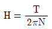
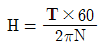
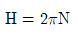
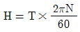
(정답률: 61%)
16. 다음 중 주물사의 시험 항목이 아닌 것은?
- 입도
- 유분도
- 점토분
- 통기도
(정답률: 59%)
17. 직경 4cm의 원형 단면봉에 200kN의 인장하중이 작용할 때 봉에 발생하는 인장응력은 약 몇 N/mm2인가?
- 159.15
- 169.42
- 179.56
- 189.85
(정답률: 43%)
18. 베어링에 오일 실(oil seal)을 사용하는 목적은?
- 열 발산을 높이기 위하여
- 축 하중을 지지하기 위하여
- 유막이 끊어지지 않도록 하기 위하여
- 기름이 새는 것과 먼지 등의 침입을 막기 위하여
(정답률: 79%)
19. 자동차 현가장치 중 코일스프링의 코일 자체에 작용하는 가장 큰 응력은?
- 열에 의한 열응력
- 스프링 자중에 의한 응력
- 굽힘모멘트에 의한 굽힘응력
- 비틀림모멘트에 의한 전단응력
(정답률: 68%)
20. 다음 패킹재료의 구비조건으로 가장 적절하지 않은 것은?
- 강인하고 내구력이 클 것
- 사용 온도 범위가 넓을 것
- 유연하고 탄력성이 있을 것
- 내열 및 화학적 변화가 클 것
(정답률: 83%)
2과목: 자동차엔진
21. 엔진의 지시마력이 1⑤PS, 마찰마력이 21PS일 때 기계효율은 약 몇 %인가?
- 70
- 80
- 84
- 90
(정답률: 57%)
22. 실린더 내에 흡입되는 흡기량이 감소하는 이유가 아닌 것은?
- 배기가스의 배압을 이용하는 과급기를 설치하였을 때
- 흡입 및 배기밸브의 개폐 시기 조정이 불량할 때
- 흡입 및 배기의 관성이 피스톤 운동을 따르지 못할 때
- 피스톤 링, 밸브 등의 마모에 의하여 가스누설이 발생할 때
(정답률: 75%)
23. 지르코니아방식의 산소센서에 대한 설명으로 틀린 것은?
- 지르코니아 소자는 백금으로 코팅되어있다.
- 배기가스 중의 산소농도에 따라 출력 전압이 변화한다.
- 산소센서의 출력 전압은 연료분사량 보정 제어에 사용된다.
- 산소센서의 온도가 100℃ 정도가 되어야 정상적으로 작동하기 시작한다.
(정답률: 78%)
24. 가솔린엔진에서 공기과잉률(λ)에 대한 설명으로 틀린 것은?
- λ값이 1일 때가 이론 혼합비 상태이다.
- λ값이 1보다 크면 공기과잉상태이고, 1보다 작으면 공기부족상태이다.
- λ값이 1에 가까울 때 질소산화물(NOx)의 발생량이 최소가 된다.
- 엔진에 공급된 연료를 완전 연소시키는데 필요한 이론 공기량과 실제로 흡인한 공기과의 비이다.
(정답률: 67%)
25. 전자제어 디젤 연료분사장치에서 예비분사에 대한 설명으로 옳은 것은?
- 예비분사는 디젤엔진의 시동성을 향상시키기 위한 분사를 말한다.
- 예비분사는 연소실의 연소압력 상승을 부드럽게 하여 소음과 진동을 줄여준다.
- 예비분사는 주 분사 이후에 미연가스의 완연연소와 후처리 장치의 재연소를 위해 이루어 지는 분사이다.
- 예비분사는 인젝터의 노후화에 따른 보정분사를 실시하여 엔진의 출력저하 및 엔진부조를 방지하는 분사이다.
(정답률: 66%)
26. CNG(compressed natural gas) 엔진에서 가스의 역류를 방지하기 위한 장치는?
- 체크밸브
- 에어조절기
- 저압연료차단밸브
- 고압연료차단밸브
(정답률: 81%)
27. 엔진에서 디지털 신호를 출력하는 센서는?
- 압전 세라믹을 이용한 노크센서
- 가변저항을 이용한 스로틀포지션 센서
- 칼만 와류 방식을 이용한 공기유량 센서
- 전자유도 방식을 이용한 크랭크축 각도센서
(정답률: 62%)
28. 총 배기량이 2000cc인 4행정 사이클 엔진이 2000rpm으로 회전할 때, 회전력이 15kgf⋅m 라면 제동 평균유효압력은 약 몇 kgf/cm2인가?(오류 신고가 접수된 문제입니다. 반드시 정답과 해설을 확인하시기 바랍니다.)
- 7.8
- 8.5
- 9.4
- 10.2
(정답률: 36%)
29. 다음은 운행차 정기검사의 배기소음도 측정을 위한 검사방법에 대한 설명이다. ( )안에 알맞은 것은?
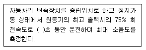
- 3
- 4
- 5
- 6
(정답률: 72%)
30. 전자제어 엔진에서 분사량은 인젝터 솔레노이드 코일의 어떤 인자에 의해 결정되는가?
- 전압치
- 저항치
- 통전시간
- 코일권수
(정답률: 82%)
31. 전자제어 연료분사장치에서 연료분사량 제어에 대한 설명 중 틀린 것은?
- 기본 분사량은 흡입공기량과 엔진 회전수에 의해 결정된다.
- 기본 분사시간은 흡입 공기량과 엔진 회전수를 곱한 값이다.
- 스로틀밸브의 개도 변화율이 크면 클수록 비동기 분사시간은 길어진다.
- 비동기분사는 급가속시 엔진의 회전수에 관계없이 순차모드에 추가로 분사하여 가속 응답성 을 향상시킨다.
(정답률: 58%)
32. 엔진 플라이휠의 기능과 관계없는 것은?
- 엔진의 동력을 전달한다.
- 엔진을 무부하 상태로 만든다.
- 엔진의 회전력을 균일하게 한다.
- 링기어를 설치하여 엔진의 시동을 걸 수 있게 한다.
(정답률: 71%)
33. 디젤노크에 대한 설명으로 가장 적합한 것은?
- 착화 지연기간이 길어지면 발생한다.
- 노크예방을 위해 냉각수온도를 낮춘다.
- 고온 고압의 연소실에서 주로 발생한다.
- 노크가 발생되면 엔진 회전수를 낮추면 된다.
(정답률: 67%)
34. 제동 열효율에 대한 설명으로 틀린 것은?
- 정미 열효율이라고도 한다.
- 작동가스가 피스톤에 한 일이다.
- 지시 열효율에 기계효율을 곱한 값이다.
- 제동 일로 변환된 열량과 총 공급된 열량의 비이다.
(정답률: 58%)
35. 엔진에서 윤활유 소비증대에 영향을 주는 원인으로 가장 적절한 것은?
- 신품 여과기의 사용
- 실린더 내벽의 마멸
- 플라이휠 링기어 마모
- 타이밍 체인 텐셔너의 마모
(정답률: 79%)
36. 연료필터에서 오버플로우 밸브의 역할이 아닌 것은?
- 필터 각부의 보호 작용
- 운전 중에 공기빼기 작용
- 분사펌프의 압력상승 작용
- 연료공급 펌프의 소음발생 방지
(정답률: 52%)
37. 엔진의 실린더 지름이 55mm, 피스톤 행정이 50mm, 압축비가 7.4라면 연소실 체적은 약 몇 cm33인가?
- 9.6
- 12.6
- 15.6
- 18.6
(정답률: 33%)
38. 운행차의 배출가스 정기검사의 배출가스 및 공기과잉률(λ) 검사에서 측정기의 최종 측정치를 읽는 방법에 대한 설명으로 틀린 것은? (단, 저 속 공회전 검사모드이다)
- 측정치가 불안정할 경우에는 5초간의 평균치로 읽는다.
- 공기과잉률은 소수점 셋째자리에서 0.001단위로 읽는다.
- 탄화수소는 소수점 첫째자리 이하는 버리고 1ppm 단위로 읽는다.
- 일산화탄소는 소수점 둘째자리 이하는 버리고 0.1% 단위로 읽는다.
(정답률: 63%)
39. 산소센서를 설치하는 목적으로 옳은 것은?
- 연료펌프의 작동을 위해서
- 정확한 공연비 제어를 위해서
- 컨트롤 릴레이를 제어하기 위해서
- 인젝터의 작동을 정확히 조절하기 위해서
(정답률: 83%)
40. 액상 LPG의 압력을 낮추어 기체 상태로 변환시킨 후 엔진에 연료를 공급하는 장치는?
- 믹서
- 봄베
- 대시 포트
- 베이퍼라이저
(정답률: 74%)
3과목: 자동차섀시
41. 우측 앞 타이어의 바깥쪽이 심하게 마모되었을 때의 조치 방법으로 옳은 것은?
- 토 인으로 수정한다.
- 앞 뒤 현가스프링을 교환한다.
- 우측 차륜의 캠버를 부(-)의 방향으로 조절한다.
- 우측 차륜의 캐스터를 정(+)의 방향으로 조절한다.
(정답률: 68%)
42. 공압식 전자제어 현가장치에서 컴프레셔에 장착되어 차고를 낮출 때 작동하며, 공기 챔버내의 압축공기를 대기 중으로 방출시키는 작용을 하는 것은?
- 에어 액추에이터 밸브
- 배기 솔레노이드밸브
- 압력스위치 제어밸브
- 컴프레셔 압력 변환밸브
(정답률: 56%)
43. 조향장치가 기본적으로 갖추어야 할 조건이 아닌 것은?
- 선회시 좌⋅우 차륜의 조향각이 달라야 한다.
- 조향장치의 기계적 강성이 충분하여야 한다.
- 노면의 충격을 감쇄시켜 조향핸들에 가능한 적게 전달되어야 한다.
- 선회 주행시 조향핸들에서 손을 떼도 선회방향성이 유지되어야 한다.
(정답률: 71%)
44. 유압식 브레이크의 마스터 실린더 단면적이 4cm2이고, 마스터실린더 내 푸시로드에 작용하는 힘이 80kgf라면, 단면적이 3cm2인 휠 실린더의 피스톤에서 발생하는 유압은 몇 kgf/cm2인가?
- 40
- 60
- 80
- 120
(정답률: 61%)
45. 자동차 바퀴가 정적 불평형일 때 일어나는 현상은?
- 시미 현상
- 롤링 현상
- 트램핑 현상
- 스탠딩 웨이브 현상
(정답률: 59%)
46. 전자제어 현가장치와 관련된 센서가 아닌 것은?
- 차속센서
- 조향각 센서
- 스로틀 개도 센서
- 파워 오일압력센서
(정답률: 65%)
47. 자동변속기의 6포지션형 변속레버 위치(select pattern)를 올바르게 나열한 것은? (단, D : 전진위치, N : 중립위치, R : 후진위치, 2, 1 : 저속 전진위치, P : 주차위치)
- P - R - N - D - 2 - 1
- P - N - R - D - 2 - 1
- R - N - D - P - 2 - 1
- R - N - P - D - 2 - 1
(정답률: 83%)
48. 일반적으로 브레이크 드럼의 재료로 사용되는 것은?
- 연강
- 청동
- 주철
- 켈밋 합금
(정답률: 70%)
49. 자동차의 변속기에서 제3속의 감속비 1.5, 종감속 구동 피니언 기어의 잇수 5, 링기어의 잇수 22, 구동바퀴의 타이어 유효반경 280mm, 엔진회전수 3300rpm으로 직진 주행하고 있다. 이때 자동차의 주행속도는 약 몇 km/h인가? (단, 타이어의 미끄러짐은 무시한다)
- 26.4
- 52.8
- 116.2
- 128.4
(정답률: 44%)
50. 타이어에 195/70R 13 82S라고 적혀 있다면 S는 무억을 의미하는가?
- 편평 타이어
- 타이어의 전폭
- 허용 최고 속도
- 스틸 레이디얼 타이어
(정답률: 68%)
51. 제동 초속도가 1⑤km/h, 차륜과 노면의 마찰계수가 0.4인 차량의 제동거리는 약 몇 m인가?
- 91.5
- 100.5
- 108.5
- 120.5
(정답률: 44%)
52. 선회시 차체가 조향각도에 비해 지나치게 많이 돌아가는 것을 말하며, 뒷바퀴에 원심력이 작용 하는 현상은?
- 하이드로 플래닝
- 오버 스티어링
- 드라이브 휠 스핀
- 코너링 포스
(정답률: 75%)
53. 변속기에서 싱크로메시 기구가 작동하는 시기는?(오류 신고가 접수된 문제입니다. 반드시 정답과 해설을 확인하시기 바랍니다.)
- 변속기어가 물릴 때
- 변속기어가 풀릴 때
- 클러치 페달을 놓을 때
- 클러치 페달을 밟을 때
(정답률: 78%)
54. 차량의 여유 구동력을 크게 하기 위한 방법이 아닌 것은?
- 주행저항을 적게 한다.
- 총 감속비를 크게 한다.
- 엔진 회전력을 크게 한다.
- 구동바퀴의 유효반지름을 크게 한다.
(정답률: 52%)
55. 타이어가 편마모되는 원인이 아닌 것은?
- 쇽업소버가 불량하다.
- 앞바퀴 정렬이 불량하다.
- 타이어의 공기압이 낮다.
- 자동차의 중량이 증가하였다.
(정답률: 70%)
56. 차륜정렬에서 캐스터에 대한 설명으로 틀린 것은?
- 캐스터에 의해 바퀴가 추종성을 가지게 된다.
- 선회시 차체운동에 위한 바퀴 복원력이 발생한다.
- 수직방향의 하중에 의해 조향륜이 아래로 벌어지는 것을 방지한다.
- 바퀴를 차축에 설치하는 킹핀이 바퀴의 수직선과 이루는 각도를 말한다,
(정답률: 52%)
57. ABS장치에서 펌프로부터 토출된 고압의 오일을 일시적으로 저장하고 맥동을 완화시켜주는 구성품은?
- 어큐뮬레이터
- 솔레노이드 밸브
- 모듈레이터
- 프로포셔닝 밸브
(정답률: 72%)
58. 전자제어 제동장치(ABS)의 구성요소가 아닌 것은?
- 휠 스피드 센서
- 차고 센서
- 하이드로릭 유닛
- 어큐뮬레이터
(정답률: 71%)
59. 자동차의 동력전달 계통에 사용되는 클러치의 종류가 아닌 것은?
- 마찰 클러치
- 유체 클러치
- 전자 클러치
- 슬립 클러치
(정답률: 65%)
60. 동력전달장치인 추진축이 기하학적인 중심과 질량중심이 일치하지 않을 때 일어나는 진동은?
- 요잉
- 피칭
- 롤링
- 휠링
(정답률: 57%)
4과목: 자동차전기
61. 교류발전기에서 유도 전압이 발생되는 구성품은?
- 로터
- 회전자
- 계자코일
- 스테이터
(정답률: 52%)
62. 공기조화장치에서 저압과 고압스위치로 구성되어 있으며, 리시버 드라이어에 주로 장착되어 있는데 컴프레셔의 과열을 방지하는 역할을 하는 스위치는?
- 듀얼 압력 스위치
- 콘덴서 압력 스위치
- 어큐뮬레이터 스위치
- 리시버드라이어 스위치
(정답률: 49%)
63. 일반적인 오실로스코프에 대한 설명으로 옳은 것은?
- X축은 전압을 표시한다.
- Y축은 시간을 표시한다.
- 멀티미터의 데이터보다 값이 정밀하다.
- 전압, 온도, 습도 등을 기본으로 표시한다.
(정답률: 69%)
64. 점화코일에 관한 설명으로 틀린 것은?
- 점화플러그에 불꽃방전을 일으킬 수 있는 높은 전압을 발생한다.
- 점화코일의 입력측이 1차 코일이고, 출력측이 2차 코일이다.
- 1차 코일에 전류 차단시 플레이밍의 왼손법칙에 의해 전압이 상승된다.
- 2차 코일에서는 상호유도작용으로 2차코일의 권수비에 비례하여 높은 전압이 발생한다.
(정답률: 62%)
65. 오토라이트(Auto light) 제어회로의 구성부품으로 가장 거리가 먼 것은?
- 압력센서
- 조도감지 센서
- 오토 라이트 스위치
- 램프 제어용 휴즈 및 릴레이
(정답률: 80%)
66. 전자동 에어컨시스템에서 제어모듈의 출력요소로 틀린 것은?
- 블로워 모터
- 냉각수 밸브
- 내⋅외기 도어 액추에이터
- 에어믹스 도어 액추에이터
(정답률: 62%)
67. 에어백 장치에서 승객의 안전벨트 착용여부를 판단하는 것은?
- 시트부하 스위치
- 충돌 센서
- 버클스위치
- 안전 센서
(정답률: 80%)
68. 다이오드를 이용한 자동차용 전구회로에 대한 설명 중 옳은 것은?
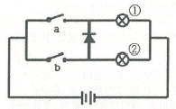
- 스위치 b가 ON일 때 전구 ②만 점등된다.
- 스위치 b가 ON일 때 전구 ①만 점등된다.
- 스위치 a가 ON일 때 전구 ①만 점등된다.
- 스위치 a가 ON일 때 전구 ①과 전구 ② 모두 점등된다.
(정답률: 71%)
69. 회로가 그림과 같이 연결되었을 때 멀티미터가 지시하는 전류 값은 몇 A인가?
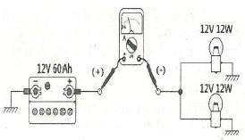
- 1
- 2
- 4
- 12
(정답률: 52%)
70. 점화파형에 대한 설명으로 틀린 것은?
- 압축압력이 높을수록 점화요구전압이 높아진다.
- 점화플러그의 간극이 클수록 점화요구전압이 높아진다.
- 점화플러그의 간극이 좁을수록 불꽃방전시간이 길어진다.
- 점화 1차 코일에 흐르는 전류가 클수록 자기 유도전압이 낮아진다.
(정답률: 45%)
71. 직권식 기동전동기의 전기자 코일과 계자코일의 연결방식은?(오류 신고가 접수된 문제입니다. 반드시 정답과 해설을 확인하시기 바랍니다.)
- 직렬로 연결되었다.
- 병렬로 연결되었다.
- 직⋅병렬 혼합 연결되었다.
- 델타 방식으로 연결되었다.
(정답률: 69%)
72. 서로 다른 종류의 두 도체(또는 반도체)의 접점에서 전류가 흐를 때 접점에서 줄열(Joule‵sheat) 외에 발열 또는 흡열이 일어나는 현상은?
- 홀 효과
- 피에조 효과
- 자계 효과
- 펠티에 효과
(정답률: 52%)
73. 하이브리드 자동차에서 모터의 회전자와 고정자의 위치를 감지하는 것은?
- 레졸버
- 인버터
- 경사각 센서
- 저전압 직류 변환장치
(정답률: 64%)
74. 가솔린엔진에서 크랭크축의 회전수와 점화시기의 관계에 대한 설명으로 옳은 것은?
- 회전수와 점화시기는 무관하다.
- 회전수의 증가와 더불어 점화시기는 진각된다.
- 회전수의 감소와 더불어 점화시기는 진각 후 지각된다,
- 회전수의 증가와 더불어 점화시기는 지각 후 진각된다.
(정답률: 64%)
75. 하이브리드 차량에서 감속 시 전기모터를 발전기로 전환하여 차량의 운동 에너지를 전기에너지로 변환시켜 배터리로 화수하는 시스템은?
- 회생 제동 시스템
- 파워 릴레이 시스템
- 아이들링 스톱 시스템
- 고전압 배터리 시스템
(정답률: 81%)
76. 배터리 극판의 영구 황산납(유화, 설페이션)현상의 원인으로 틀린 것은?
- 전해액의 비중이 너무 낮다.
- 전해액이 부족하여 극판이 노출되었다.
- 배터리의 극판이 충분하게 충전되었다.
- 배터리를 방전된 상태로 장기간 방치하였다.
(정답률: 78%)
77. [보기]가 설명하고 있는 법칙으로 옳은 것은?
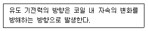
- 렌츠의 법칙
- 자기 유도 법칙
- 플레밍의 왼손 법칙
- 플레밍의 오른손 법칙
(정답률: 61%)
78. 자동차 정기검사의 등화장치 검사기준에서 ( )에 알맞은 것은? (주광축의 진폭은 10m 위치에서 다음수치 이내일 때)
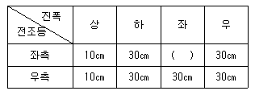
- 10
- 15
- 20
- 25
(정답률: 77%)
79. 점화순서가 1- 5 - 3 - 6 - 2 - 4 인 직렬 6기통 기관에서 2번 실린더가 흡입 초 행정일경우 1번 실린더의 상태는?
- 흡입 말
- 동력 초
- 동력 말
- 배기 중
(정답률: 58%)
80. 제동등과 후미등에 관한 설명으로 틀린 것은?
- 제동등과 후미등은 직렬로 연결되어 있다.
- LED방식의 제동등은 점등속도가 빠르다.
- 제동등은 브레이크 스위치에 의해 점등된다.
- 퓨즈 단선 시 전체 후미등이 점등되지 않는다.
(정답률: 71%)